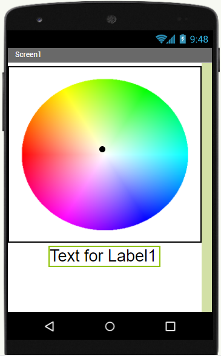

藍芽原理
藍芽（Bluetooth）是一種無線通訊技術標準，用來讓固定與行動裝置在短距離間交換資料。藍芽可區分為傳統藍芽與低功耗藍芽。
ESP32傳統序列藍芽
請開啟Arduino IDE並選擇 檔案-範例-BluethhthSerial-SerialtoSerialBT，開啟後檔案如下：
#include "BluetoothSerial.h"
BluetoothSerial SerialBT; //宣告序列藍芽變數
void setup() {
Serial.begin(115200);
SerialBT.begin("長榮1號"); //請自訂設備名稱
}
void loop() {
if (SerialBT.available()) { //資料從手機端到ESP32
Serial.println(SerialBT.read());
}
delay(20);
}
同學需修改設備名稱。
APP Inventor 2-序列藍芽
用於將文字從手機透過序列藍芽傳送至ESP32，之後再將原訊息加上 FromESP32 從ESP32透過藍芽傳送至手機，首先進行手機版面設計。頁面包含 清單選擇器(List Picker)、一個文字方塊用於輸入文字、一個按鈕用於點選傳送。執行程式前，請先配對手機與ESP32藍芽。
APP Inventor 2-序列藍芽控制全彩LED
手機版面設計。頁面包含 3個標籤(Label)、3個滑桿(Slider)、一個清單選擇器。
